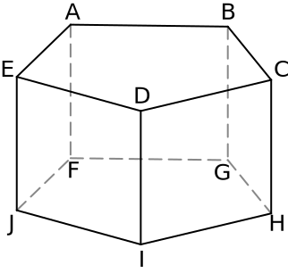
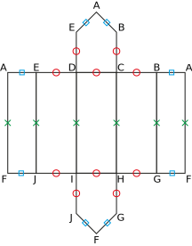
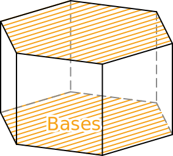
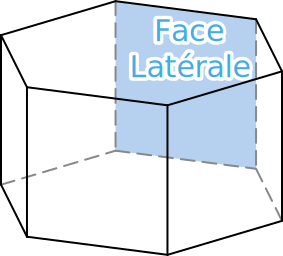
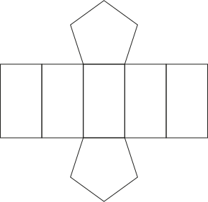

Activité Introduction

Ci-dessus est représenté en perspective un bâtiment.
- Combien ce solide a-t-il de face ? de sommet ?
- Quel est la particularité des faces ABCDE et FGHIJ ? Ces faces sont appelé base du prisme.
- Quel sont les points commun des faces latérales ?
-
En prenant pour dimension :
- AE = 1,1cm
- ED = 1,6cm
- AF = 4cm
Reproduire le patron de ce prisme en vrai grandeur, ajouter des languettes de collage, le découper et l'assembler.

Prismes :
Définition :
Un prisme droit est un solide composé de deux bases polygonales identique et parallèles relié entre elles par des faces latérales rectangulaires de même longueur.


Remarque
- Un pavé droit est un prisme particulier dont les bases sont des rectangles.
Patron :
Un patron est un dessin du plan permettant de construire un solide par découpage et pliage.
Exemple :

Remarque :
- Il est possible de créer plusieurs patron différents pour un même solide.
Cylindre :
Définition :
Un cylindre de révolution est composé de 2 disques formants les bases, parallèles entre eux.
La surface latérale lorsqu'elle est dépliée est un rectangle ayant la même largeur que le périmètre des disques.
Exemple :
Patron :
Le patron d'un cylindre est composée de deux disques identiques de part et d'autre d'un rectangle ayant pour longueur le périmètre des disques.
Exemple :